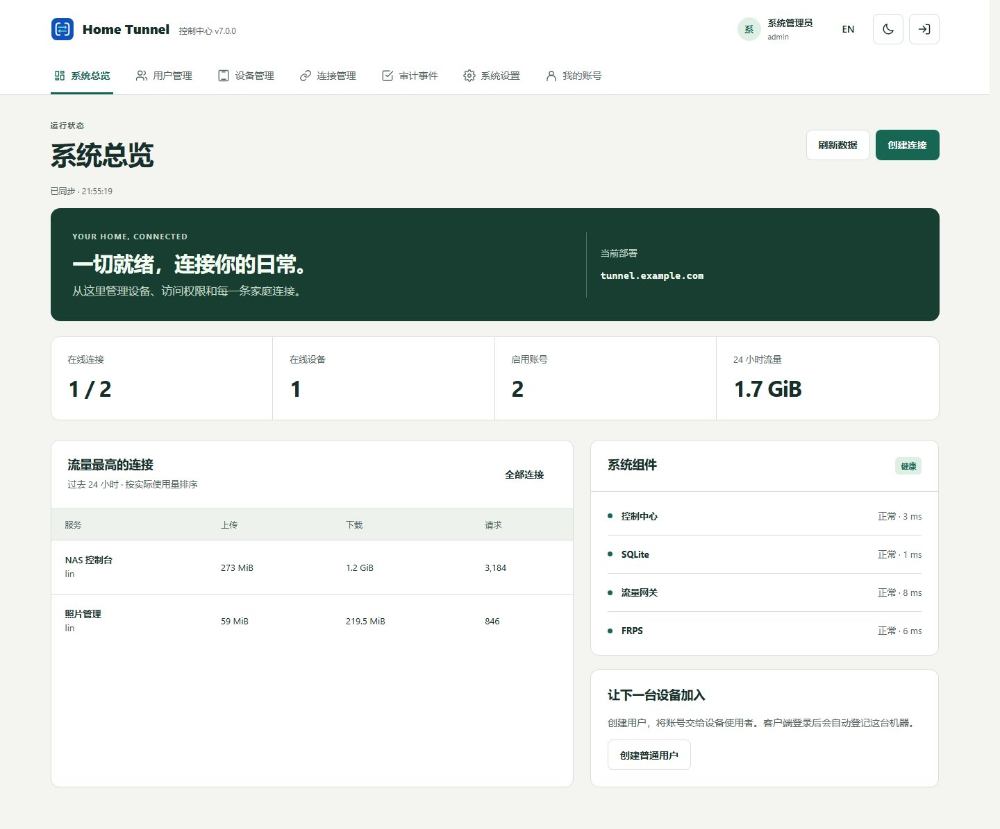

01
A space for every device.
Desktop focuses on local services. The console and Android app let you manage every device you own.
HOME TUNNEL 8.0.0 / OFFICIAL RELEASE
Reach home services through your own server. Home Tunnel 8.0.0 adds Windows-to-browser video, input and files over direct UDP, with explicit platform limits.
Open source · Self-hosted · Your data, under your control
A DIRECT CONNECTION HOME
NAS / Home Assistant / Photos
Manage devices, connections and access
Reach home from a phone or browser
HTTP / HTTPS · TCP · UDP
A FRESH PERSPECTIVE
Service health, home devices and usage in one view. This original 7.0.0 screenshot is not an 8.0 remote-desktop demonstration.

01
Desktop focuses on local services. The console and Android app let you manage every device you own.
02
One administrator manages the deployment. Each user owns their resources, with access policies, quotas and an audit trail.
03
See connection status and what needs attention. Find a service, choose its device and update it with confidence.
SECURITY
Ten-minute one-use codes, TOTP and recovery codes. Revoke management sessions and enrolled devices independently.
Account security →OPERATIONS
Preflight, redacted diagnostics, encrypted off-host backup and full restore checks. Monitor TLS, devices and service health.
Recovery guide →MANAGEMENT
Switch encrypted Android profiles. Organize devices with tags and favorites, and inspect each batch result.
Application recipes →REMOTE DESKTOP / 8.0
Final Windows package checks on one machine and isolated Linux evidence do not establish every platform or network.
H.264/VP8 video, keyboard/pointer, Unicode text and bidirectional files use direct UDP P2P with pairing, local approval and feature permissions. No relay fallback.
View, keyboard and pointer only. Evidence comes from isolated Xvfb checks; physical desktops and lock/unlock remain unverified. Text, clipboard and files are unavailable.
Multi-server management plus the shared controller, JNI and Surface. Device decoding/input remain unverified; audio, clipboard/files and multi-session UI are unavailable.
macOS/Wayland hosting, native desktop viewers, system audio, microphone return, virtual microphones and AV1/HEVC are not delivered. Windows system clipboard, concurrent media, cross-network and long-running acceptance remain outstanding.
Read the scope, limits and acceptance record →START HERE
Linux amd64 / arm64 · Docker Compose
Get 8.0.0 deployment package →Windows · macOS · Linux
Download 8.0.0 client →Android 8.0+ · arm64 · APK
Download 8.0.0 APK →Unified version 8.0.0. Read actual artifacts for Windows/macOS signing status; Android retains its release certificate. Check platform limits and outstanding acceptance. Verification details
THREE SIMPLE STEPS
Start with a public server and a domain you control.
Yes. Your public Linux host runs management and tunnel services. Remote-desktop payloads use direct UDP between peers: the server does not relay video, input or files, and an unavailable direct path fails explicitly.
Tunnels run on your home computer or NAS. Android retains management and integrates a controller; physical-device decoding and input remain unverified.
Back up, end remote sessions and read component upgrade guides. The 7.0 tunnel compatibility path remains; older servers do not provide the new remote-desktop service. Complete upgrade/restore acceptance is still outstanding. Historical 7.0 downloads remain available.
Share reproducible issues, real deployment experience or documentation improvements. A Star or a link helps others with the same need discover the project.